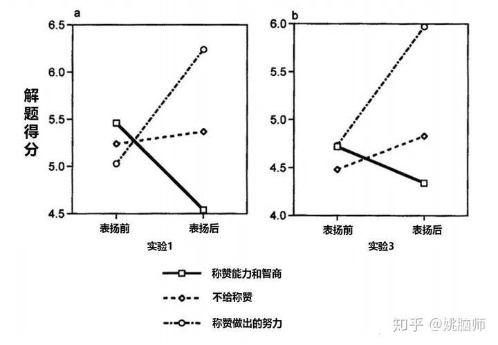
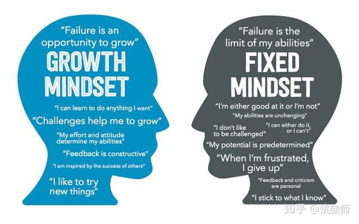
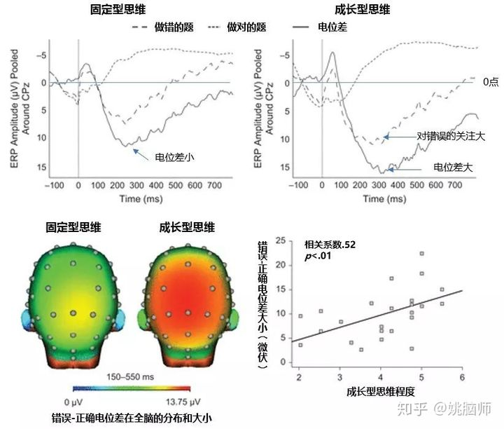

以前大人都爱夸小孩聪明。
不成想有些孩子背上了聪明的包袱，反而成长得不尽人意。
后来心理学席卷神州大陆，告诉我们：夸聪明害人，夸努力才是正道。
身为教育者，姚脑师也很注重夸赞同学的努力，鼓励他们看轻成败，注重过程。
然而在实践中我却发现，同样是夸努力，有的学生能成长，有的学生却没有任何收获，让我甚是不解**。**
为什么夸聪明不好？
夸努力就一定能使人进步吗？
思维是怎么影响大脑运作的呢？
一、夸孩子聪明会毁了孩子？
在1998年，Dweck和同事就发现称赞孩子“很聪明”反而会降低孩子学习的动力和成绩 [1]。
在一系列实验中，Dweck和同事们研究了不同的称赞对小学生解题的能力的影响。她们先给同学们简单的题目做，然后分别 1）称赞他们的智商（“你一定是个聪明的孩子！”） 2）称赞他们付出的努力（“你一定下了不少功夫！”） 3）或是不给予称赞。
紧接着，作者们让同学们做难题来打击他们的自信，以观察不同的称赞如何影响他们应对挫折的能力。
她们发现被称赞“好聪明”的孩子在解题过程中更关心自己相对于他人的表现，而被称赞“很努力”的孩子则更关心学习的过程。
换句话说，被夸赞“聪明”的孩子在遭受挫折后更容易放弃，倾向于把失败归咎于自己笨。他们不能享受做题的乐趣，在做题的得分上要远低于被赞“努力”和没有被称赞的孩子们。

为什么称赞一个人的智商或能力反而会毁了TA的表现呢？
二、思维决定成就
Dweck通过20年的研究发现不同的称赞方式塑造了不同的思维方式，而思维方式在很大程度上又决定了一个人能不能成功 [2]。
Dweck告诉我们，称赞孩子“很聪明”或“很有天赋”会塑造所谓的固定型思维（fixed mindset），即认为人的性格、天赋和创造力是天生的，是无法改变的。
**有固定型思维的人会认为成功和失败都是对自己能力的检验。成功了就证明自己的天赋和能力高人一等，而失败则暴露了自己的愚蠢和无能。**于是在他们的人生道路上，他们会更倾向于避重就轻，在自己的舒适圈里寻找自己熟悉的“成功”，借此不断证明自己的天赋和能力。换句话说，为了逃避失败带来的挫败感，他们不愿意接受新的挑战，因为这可能带来失败。
相比之下，称赞孩子“很努力”则会帮他们塑造所谓的成长型思维（growth mindset），即认为人的天赋和能力会随着时间和经历不断成长。
**有成长型思维的人会把成功和失败视作对自己学习情况的反馈，而非对智商或能力的测验。他们相信自己的能力能通过后天改变，既不需要通过成功来证明，也不会因为失败而丢人。**在面临挑战的时候，成长型思维的人不会因为害怕失败而避重就轻，他们会抱着试一试的心态迎接挑战。如果成功了，他们会自信地继续努力，而不是对自己的智商或能力沾沾自喜。如果失败了，他们会沉下心来吸取教训，而不会因羞耻或挫败而感到困扰。

咋一看来，称赞努力来训练成长型思维似乎是走向成功的好方法。
可同样是夸努力，为什么有的人获得了成长，有的人却还在原地踏步？
成长型思维也要看脸的吗？
三、对成长性思维的误解
姚脑师今年带的一个本科生对科研充满了兴趣，可她做出来的东西却总是差强人意。她写的研究计划缺乏逻辑，对编程也是一窍不通。
看着她挫败的样子，我生怕批评不当会伤害她幼小的心灵。
于是我一边安慰学生“Good effort”，另一边进行成长型思维教育，鼓励她通过努力慢慢提高她的科研能力。
该学生倒是表现得很努力，但最后的毕业论文显示她并没有多少长进。
我很懊恼。是我教导无方吗？
我查了一些资料，进行了反思，并找到了自己的错误——成长型思维不能简单地等同于努力。
学生或孩子要取得进步需要的是有效的学习，而努力只是学习的手段，不是学习的目的。
真正的成长型思维，不是盲目地努力，而是注重从失败中吸取教训。
科学家曾用脑电图的方法研究成长型思维和固定型思维的大脑如何应对错误 [3]。
他们让被试人看一系列快速闪现的字符串，并要求他们既快速又准确地辨认字符串正中间的字母是什么（如NNMNN中间的M）。
研究人员发现，大脑在辨认错误时（相较于辨认正确时）会产生一个正向电位差。这个电位差的大小反映了大脑对（犯错时）反馈信息的注意力大小。
成长型思维越强的人，该电位差越大，也就说他们更关注自己的错误，并从中吸取教训。事实证明，他们在犯错后的正确率确实有显著提高。
而固定型思维越强的人，该电位差越小，说明他们有意回避自己的错误，在犯错后的正确率显著低于成长型的被试。

这个实验说明了成长型和固定型思维在大脑中具有神经基础。
成长型思维使人进步的关键不是单纯的增加努力，而是做到有效地从失败中吸取教训。
明白了成长型思维的神经基础后，我们就可以预见到单纯地夸赞努力并不能让学生或孩子走得很远。
正确的做法应当是：在夸努力的基础上进一步了解他们已经尝试过的学习方法，找出失败的原因，并根据实际情况定制今后努力的方向。
姚脑师很后悔没有早些意识到这点，不然也许我的学生可以有更好的成绩。
伤心归伤心，但我也庆幸因此找到了改进的方向。
我们在教育孩子或学生时要意识到自己也会犯错。
这时候重要的是从失败的例子中找出原因，并在今后的实践中做出改进。
所以，下一次夸人夸己的时候，我们既要夸努力，也要看到失败背后的智慧，向真正的成长型思维进击。
参考文献
- Mueller, C. M., & Dweck, C. S. (1998). Praise for intelligence can undermine children’s motivation and performance. Journal of Personality and Social Psychology, 75(1), 33-52.
- Dweck,C. S. (2008). Mindset: The new psychology of success. Random House Digital, Inc.
- Moser, J. S., Schroder, H. S., Heeter, C., Moran, T. P., & Lee, Y. H. (2011). Mind your errors: Evidence for a neural mechanism linking growth mind-set to adaptive posterror adjustments. Psychological Science, 22(12),1484-1489.